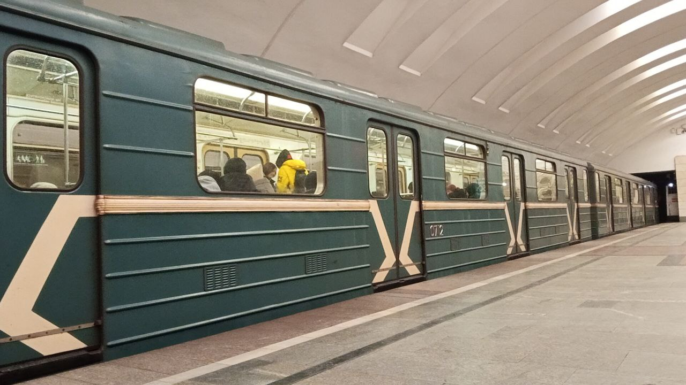
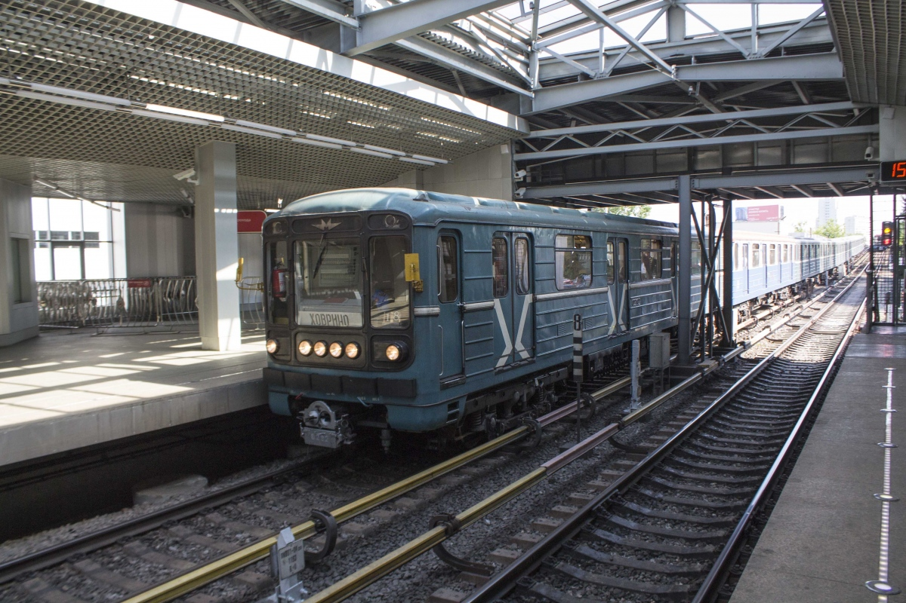

Вагоны с 2 рёбрами жёсткости
Вагоны метро с двумя продольными рёбрами жёсткости на боковых стенках кузова — характерная особенность многих номерных вагонов, определяющая их внешний вид и конструктивную прочность.
На данный момент вагоны с двумя рёбрами жёсткости практически полностью выведены из эксплуатации. Единственный действующий — 0724.
Конструктивные особенности
⚙️ Конструкция
- 2 продольных ребра — на боковых стенках кузова
- Назначение — усиление конструкции кузова
- Расположение — по всей длине вагона
- Материал — стальной профиль
📋 Особенности
- Повышают жёсткость кузова
- Влияют на внешний вид вагона
- Характерны для ранних модификаций
- У поздних версий количество может меняться
Модели вагонов с рёбрами жёсткости
| Тип вагона | Рёбра жёсткости |
|---|---|
| 81-717/714 | 2 ребра |
| 81-717.5/714.5 | 2/3 ребра |
| 81-717.6/714.6 | 3 ребра |
| 81-717.5М/714.5М | 3 ребра |
Вагоны в эксплуатации
На данный момент на Замоскворецкой линии (ЗЛ) в депо ТЧ-17 «Южное» эксплуатируется только один вагон с двумя рёбрами жёсткости:
| Номер вагона | Депо | Линия | Примечание |
|---|---|---|---|
| 0724 | ТЧ-17 «Южное» | ЗЛ (2) | В эксплуатации |
Всего вагонов в эксплуатации: 1 единица (0724)
Он работает на Замоскворецкой линии и приписан к депо ТЧ-17 «Южное».
Списаны / ожидают утилизации
Большинство вагонов с двумя рёбрами жёсткости выведены из эксплуатации:
| Номера вагонов | Статус | Примечание |
|---|---|---|
| 0705 — 0714 | Ожидают утилизации | Выведены из эксплуатации |
| 0715 | Списан | — |
| 0722 — 0723 | Списаны | — |
| 0724 | Эксплуатируется | Единственный действующий |
Внимание: Вагоны 0705–0714 ожидают утилизации, 0715 и 0722–0723 уже списаны. Единственный эксплуатируемый вагон — 0724.
Используются три и два ребра жесткости
Некоторые вагоны имеют три ребра жёсткости, у кабины два ребра. Например, вагоны 0292 и 0297:
🚆 Вагон 0292
Три ребра жёсткости. Рядом с дверью в кабину машиниста — два ребра.
🚆 Вагон 0297
Три ребра жёсткости. Рядом с дверью в кабину машиниста — два ребра.
Особенность: У вагонов 0292 и 0297 три ребра жёсткости, но рядом с дверью в кабину машиниста — только два.
Интересные факты
Конструктивная особенность
Рёбра жёсткости появились для усиления кузова при переходе на более лёгкие материалы.
Визуальный идентификатор
Количество рёбер помогает быстро определить модификацию вагона.
Редкие экземпляры
Вагоны серии 0705-0728 являются одними из последних с двумя рёбрами на Замоскворецкой линии.
Фотогалерея

📸 pfandrom

📸 Nedxel(transphoto)
Нажмите на фото для увеличения
Связанные разделы
«Два ребра жёсткости на номерных вагонах — это не просто конструктивный элемент, а визуальный код целой эпохи в метростроении. Эти вагоны пережили десятилетия и почти все ушли в историю, напоминая о времени, когда создавалась основа Московского метрополитена».